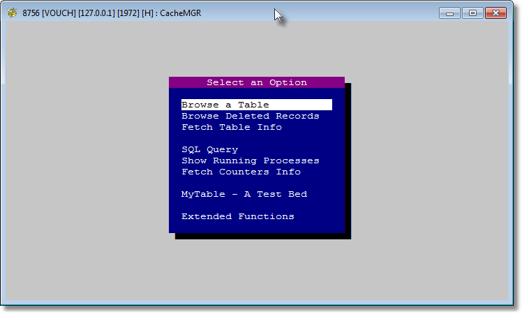
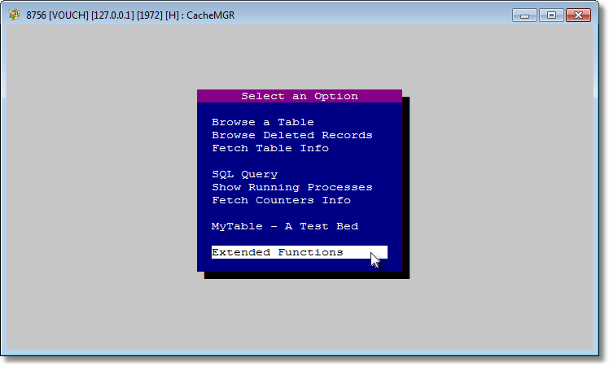
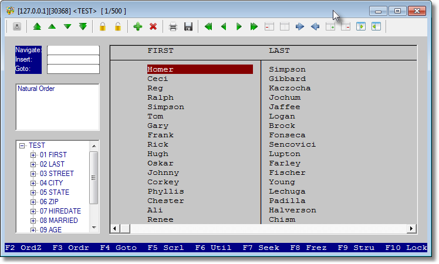

CachéRDD is a RDD (Replaceable Database Driver) for the open-source Harbour and xHarbour compilers to connect to InterSystems Caché, the post-relational, massively scalable database. Written by Pritpal Bedi, published with the kind permission of CURACAO.
A classic blend of true RDBMS and time-tested traditional xbase syntax.
The ONLY difference is that now your data is more SECURE, SCALABLE, FREE OF INDEX CORRUPTION, with TRANSACTION CONTROL, and subject to INTEGRATION WITH WIDE RANGE OF EXTERNAL SQL TOOLS.
AND at top of all you need not to change a single line of source except for resolving table name issues and adjusting a few index expressions here and there.
CachéRDD does not issue any SQL commands to the database for any of the RDD functions nor it needs any DSN (Data Source Name). CachéRDD does not require ODBC drivers to be installed. CachéRDD talks to the database directly with its lower level interface. This is the main reason that like DBFCDX functionality has been achieved.
What advantages CachéRDD may offer for an (x)Harbour application over its native or other 3rd party RDDs.
The key factor to today's business success is a very high rate of data-sharing among other agencies. Proprietary (x)Harbour table structures cannot provide this feature at all.
CACHE.DAT, be it CachéRDD compiled code or application data, is portable across platforms. A big boost to high-availability.
Indexes in (x)Harbour tend to be corrupted here-and-there, specially in networking environment. A lost index means lost data. CachéRDD ends that class of problem.
None of the (x)Harbour's native RDDs have this capability at all. Either a transaction is posted in its entirety or nothing is changed in the database.
Native RDDs do not support more than 2 GB physical size and around 400 million records per table. Caché does not have such limitation.
Developer can stick to his favourite code syntax for base development yet adopt newer arrivals to connect to same database.
C bindings and Caché ObjectScript has been exploited to develop CachéRDD.
The fundamental difference between XBASE and SQL dialects is that XBASE is processing data on ROW-by-ROW whereas SQL on ROW-SET. So XBASE cannot take advantage of SQL oriented approach. In RDBMS context RDD approach referes to ISAM, Indexed Sequential Access Method. Today no RDBMS provides interface to access tables in this way except for Caché. This great feature of Caché has become the foundation for CachéRDD.
How CachéRDD holds up against RDD behavior - the details that matter when you port an application.
CacheBeginTransaction() / CacheEndTransaction(), and CacheRollBackTransaction() in a RECOVER block. Nested transactions: partially - avoid for now.DbGoBottom(); DbSkip(1) or via CacheGotoPhantom() - not GO LastRec()+1.SQLUSER). The VOUCH||MYTABLE.DBF syntax places a table in a schema at DbCreate()/USE time.RDD coverage, plus a library of extended functions for connection, schema, lock, transaction and server management.
Most of the documented RDD functions are implemented - DbSeek() (soft seek and seek-last), DbSkip() (+n / -n), DbCreate(), DbCreateIndex(), DbSetOrder(), DbrLock()/DbrLockList()/DbrUnlock(), and the rest of the daily set. A few are partial (DbInfo(), DbOrdInfo()) and some are not implemented (relations, DbRecall()/Deleted() as such, conditional order-bag functions). The full status table lives in the RDD Functions topic of the documentation.
Extended functions important and/or useful for the implementation:
Cache Manager is an application which exposes many options to manage tables on the server without visiting any Cache provided interfaces. CacheMGR can also be used as a DBU which provides many extended features to make browsing a pleasure. CacheMGR is intended for developers and/or end-user administrators.



From the author's FAQ on the documentation site.
Yes. RDDADS, DBFCDX and CachéRDD all are tested to be working together. However, you must take care of RDD specific functions which may be called at the execution of the application. For example, AdsGetServerDate() might be a candidate to guard it against which RDD is in operation at the time when this function is called.
Yes. You need to guard all your database updates: CacheBeginTransaction(), BEGIN SEQUENCE with your database updation code, RECOVER with CacheRollBackTransaction() in the event of any error, END SEQUENCE, CacheEndTransaction(). In the event of system failure, CacheRollBackTransaction() will ever be executed in case application does not reach to the line CacheEndTransaction().
Yes. And these are true server-side indexes. Valid examples: L_Name + F_Name + Designation, Code + Dtos( D_Birth ) + Upper( L_Name, 20 ) + Substr( Status, 2, 4 ) + Str( Salary, 10, 2 ).
Yes. But only the FOR condition is supported. As CachéRDD supports only one order bag containing unlimited tags, WHILE condition is not supported at all which creates the temporary indexes which are erased when not needed. CachéRDD handles only persistant indexes.
Once RLock() is successful, no other process, be it RDD oriented or non-RDD oriented, can update the RLock()d record. It behaves just like other xbase dialect offers. You can be sure that only the instance which has obtained record lock with RLock() can update that record.
A list of features still to be implemented, from the author.
In the author's own words, from the documentation site.
CachéRDD's development has been initiated by Curacao under the visionary foresight of Eric Baruch (the then CFO) and dynamic leadership of Eryk Szachniewicz, Manager, MIS.
"I am deeply indebted to Curacao which has kindly permitted me to publish the library in any manner I like. And I am highly thankful to Eric Baruch and Eryk Szachniewicz for their superb support."